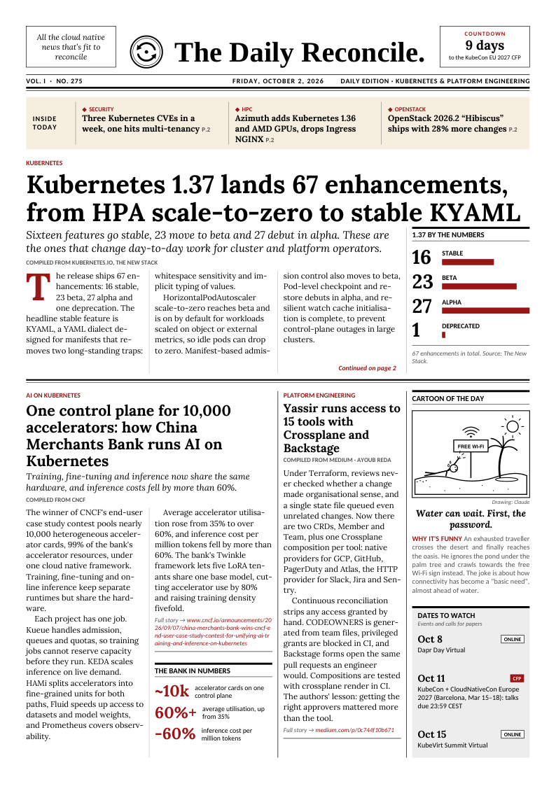

Latest edition · October 2, 2026
Kubernetes 1.37 lands 67 enhancements, from HPA scale-to-zero to stable KYAML
Sixteen features go stable, 23 move to beta and 27 debut in alpha. These are the ones that change day-to-day work for cluster and platform operators.
Also inside
- One control plane for 10,000 accelerators: how China Merchants Bank runs AI on Kubernetes
- Yassir runs access to 15 tools with Crossplane and Backstage
- OpenStack 2026.2 “Hibiscus” ships with 28% more changes
- GPT-6.1 Sol, Claude Sonnet 5.5 and open-weight MiMo-V2.6 land in one week